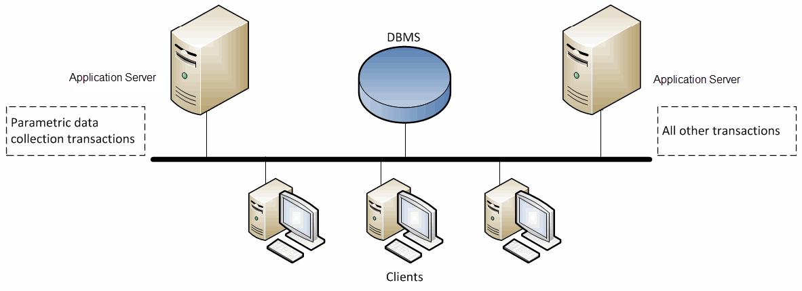

Defining Data Collection Definitions
A Data Collection Definition references a parametric data definition that contains a set of data collection parameters. The data collection parameters are presented to users during transaction processing. The data collection definition and the transaction with which it is used are identified in the specification definition associated with the step where the data is collected.
In implementations with high transaction volumes, consider dedicating a server for data collection outside a cluster, similar to this diagram.

Before creating any data collection definition instances, parametric data definitions must be defined using the Data Collection Wizard (recommended) or Designer. The name of the parametric data definition is then referenced in the Data Collection Type field of the data collection definition.
When defining a data collection definition for a Portal shop floor page, you must specify a Data Collection Type and select a web part. The value selected in the Data Collection Type field should match the selected web part.
Note the following:
| • | Data Collection Def contains the optional Modeling definition: SPC Chart Group. |
| • | Data Collection Def is an optional field in the Spec modeling definition. |
| Note: | A data collection definition can have related WIP Messages if it is associated with a field from a container definition. Refer to the "Defining WIP Messages" and the Opcenter Execution Medical Device and Diagnostics Portal Shop Floor User Guide or the Opcenter Execution Core Shop Floor User Guide for information. |
This table defines the fields unique to the Data Collection Def page.
Refer to "Common Fields on Modeling Pages" for information on the fields common to all modeling objects.
|
Field |
Definition |
Type |
|
General |
||
|
Engineering Change Order |
Engineering change order assigned to this revision. You can enter a maximum of 30 characters. |
Optional |
|
Details |
||
|
Data Collection Type |
CDO type used to store the parametric data for a service. This is used in conjunction with the Electronic Procedure module. |
Optional |
|
Web Part |
Web parts created in Portal Studio for parametric data controls. The web part has the fields used for data collection on a Portal shop floor page. |
Optional |
|
SPC Chart Group |
Chart group to which the data collection will be attached. |
Optional |
How to Define a Data Collection
Follow these steps to define a Data Collection Definition:
| 1. | Open the Data Collection Def page. The Data Collection Def page appears within the Modeling page. |
| 2. | Click New. Blank fields appear for you to define a new instance. |
| 3. | Enter the name of this definition in the Data Collection Def field. |
| 4. | Enter the revision, or version, of this object in the Revision field. |
| 5. | Select the Revision of Record check box if this is the revision of record. |
| 6. | Enter optional information according to your business requirements. Refer to the field definitions table for information on the optional fields. |
| 7. | Click Save. The application saves the modeling object and displays a success message. |